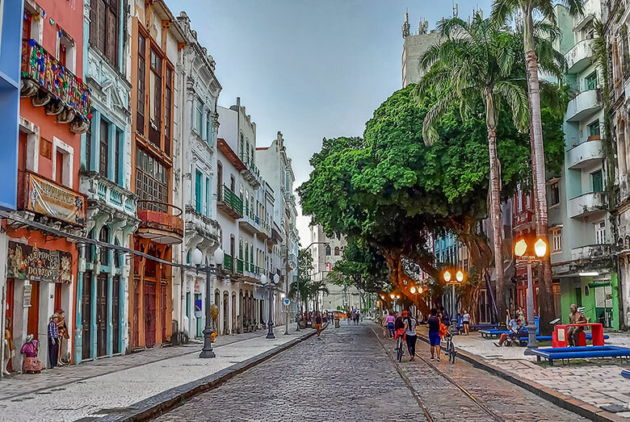
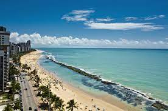

Pontos turísticos de Recife
Recife é uma das cidades mais belas do Brasil, e vamos conhecer um pouco dos seus pontos turísticos:
Recife Antigo
Outro destaque que enriquece a experiência turística em Recife é o Recife Antigo, um bairro histórico que preserva a arquitetura colonial portuguesa e abriga o maior conjunto arquitetônico e paisagístico do período colonial brasileiro. As ruas de paralelepípedos, os casarões coloridos e as igrejas antigas transportam os visitantes para o passado, oferecendo um ambiente charmoso e cheio de história.
Praia de Boa Viagem
Ainda, não se pode deixar de mencionar a famosa praia de Boa Viagem, que se estende ao longo da costa urbana de Recife. Com suas águas mornas e areias douradas, a praia é um convite irresistível para os amantes do sol e do mar. Além disso, a culinária local é uma atração à parte, com pratos típicos como a feijoada pernambucana e as deliciosas tapiocas recheadas, que proporcionam uma verdadeira festa de sabores aos visitantes.
